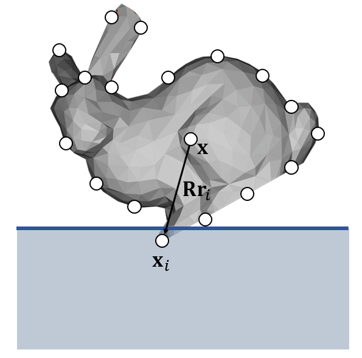

注：本篇由同组同学LLY编写，本人代完成格式化
刚体
在物理学里，刚体是一种形变为0，或者形变可以忽略的固体。理想刚体在运动中和受到力的作用后，形状和大小不变，而且内部各点的相对位置不变。这种物体不可能实际存在，但固体通常可以假定为刚体。所以我们使用刚体来对固体进行模拟。在模拟时，我们通常使用Mesh来表示一个刚体。
刚体属性与表达
为了表示一个刚体，我们首先需要知道刚体的质心。在这里因为篇幅限制，我们不讨论质心是如何求得的，把质心当作已知量就可以了。质心有三维坐标 \(\mathbf x\) 和速度 \(\mathbf v\) 。其次，刚体还需要定向。选择一个相对刚体固定，原点在刚体质心的坐标系，称为局部坐标系。刚体及模拟的其他对象被放置在世界坐标系中。
为了指定刚体在世界坐标系中的放置方式，我们指定其位置 \(\mathbf x\) 和 方向 \(R\) 。局部坐标为 \(\mathbf p_0\) 的点，世界坐标系下的坐标为：\(\mathbf p = \mathbf x + R \mathbf p_0\)
我们想知道这个点在世界坐标系中如何随时间变化，所以对时间进行求导，得出： $ = + R + p_0 $
因为在局部坐标系中 $ $ = 0 , 所以得出： $ = v + p_0 $
所以我们只需要求出每个时间的 \(\mathbf v\) 和 $ $ 就可以描述刚体随时间的运动状态了。
为了确定方向的变化率，需要引入角速度的概念。角速度通常表示为三维矢量。方向代表旋转轴，大小代表旋转的快慢，通常以弧度/秒为计量单位。
我们知道 \(R\) 的列是刚体坐标系的坐标轴的方向向量在世界坐标系下的坐标，因此， $ $ 由这些方向向量的导数组成： \[ \displaystyle\dot{R} = [\dot{\hat{u_x}}\quad\dot{\hat{u_y}}\quad\dot{\hat{u_z}} ] \] 于是 \(\dot{R}\) 就被简化成为求旋转矢量的导数的问题。旋转中心位置是 \(\mathbf x\) ，旋转点位置是 \(\mathbf p\) ，旋转中心到位置 \(\mathbf p\) 的向量为 \(r\) 。我们的目的是测定 \(r\) 的变化率。由于 \(\mathbf p\) 以角速度 \(\omega\) 旋转，所以其瞬时速度与 \(r\) 和 \(\omega\) 垂直。瞬时速度方向由 \(\omega\times r\) 表示，大小与向量积大小一致。于是我们可以得到： $ = r$
将结果应用到旋转矩阵中，我们能写出旋转矩阵按时间的导数： \[ \dot R=[\omega\times\hat{\mathbf u}_x,\ \omega\times\hat{\mathbf u}_y,\ \omega\times\hat{\mathbf u}_z] \] 根据向量积表示法，我们可以化简得到： \[ \dot R=\omega^*R\quad其中a^*=\begin{bmatrix}0&-a_z&a_y\\a_z&0&-a_x\\-a_y&a_x&0\end{bmatrix} \] 现在，我们只需要知道 \(\mathbf v\) 和 \(\omega\) 就能表示描述刚体的运动状态了。
刚体运动
前面我们讲到，刚体有线性状态（ \(\mathbf v\) ）和角度状态（ \(\omega\) ）。在模拟刚体时，必须更新这两种状态。刚体的运动可以拆分称平移运动和旋转运动。
平移运动
平移运动非常简单。根据牛顿第二定律 \(F=ma\) ，逐时间步地更新我们的加速度、速度和位置即可。我们用前面提到过的时间积分方法迭代计算即可。
旋转运动
惯性张量
线性动量 \(P=mv\) ，在有角度的情况下，有一个接近的类比，其中角动量 \(L\) 被定义为惯性张量 \(I\) 和角速度 \(\omega\) 的乘积： \(L=I\omega\) 。惯性张量I描述质量如何在物体中分布，是一个 \(3\times 3\) 的矩阵。 \(I\) 的矩阵形式描述了惯性因方向而变化。局部坐标系中惯性张量的公式如下： \[ \mathbf I_{ref}=\sum m_i(\mathbf R_i^T\mathbf R_i\mathbf 1-\mathbf R_i\mathbf R_i^T) \] 刚体在局部坐标系中的惯性张量 \(I_0\) 不会改变，但在世界坐标系中，惯性张量却会随着物体当前的方向而发生变化。根据线性空间转换可得，在世界坐标系中，物体的惯性张量为： \[ \mathbf I=\mathbf R\mathbf I_0\mathbf R^T \] 线性运动与旋转运动中，有这样的对应关系：
力矩
线性动量 \(P=mv\) ，对于 \(F\) ，有 $ F = ma = m = $ ，即 \(F\) 是线性动量的时间变化率。角动量变化有类似的过程，角动量的时间变化率是力矩 \(\tau\)。
力矩对应力的旋转 \(\tau = \dot{L}\)
已知质心为 \(\mathbf x\) ，假定在点 \(\mathbf p\) 施加力 \(F\) 。任何不作用于刚体质心的力都将产生力矩。为测定力矩，首先计算力臂 \(r\) ，\(\tau = r \times f\) 。力矩是一个矢量，方向同时垂直于力臂及作用力。方向为物体因力矩旋转时围绕的轴的方向。
力矩作用于整个刚体，可理解为力矩通过了质心。力矩的叠加满足矢量加法。
于是，我们很容易就能得出 \(\displaystyle\Delta \omega = \frac{\Delta L}{I} = \Delta t \frac{\tau}{I}\)
表示旋转的方法
我们到此为止一直在使用旋转矩阵来表示旋转。但其实旋转有很多种表示方式。
旋转矩阵
- 会有太多数据冗余：表示旋转矩阵需要九个元素，但是只表示了三个自由度。
- 表示方法不符合直觉。
- 定义它的时间导数很困难。
欧拉角
- 优势：表示是符合直觉的。它用三个轴的旋转角度来表达一个旋转。
- 劣势：可能会导致万向锁问题，并且定义它的时间导数也很困难。
四元数： 一个四元数的第一位表示旋转角度，后三位表示旋转轴方向。
并且四元数可以和旋转矩阵互相转换：
于是我们用四元数来表示旋转的状态更新方程可以表示为：

总结一下，我们的刚体运动模拟过程由下图所示：线性运动和角度运动的物理量都有相互对应的关系。
刚体的碰撞与接触
Rigid Collision Detection and Response by Impulse
之前我们在粒子系统中已经介绍了一个点与面的两种碰撞方式，在Mesh表达的刚体碰撞处理中，我们一般采用Impulse的碰撞响应方式。
当物体有许多点构成时，我们可以检测每个点是否发生碰撞。

每一个点由 $x_i $ 表示，计算点到表面的距离 $ (x) $ 是否小于0。若大于零，说明没有发生碰撞。若小于零，则发生碰撞。
然后将线性速度与角速度合成为此时该点的速度，若速度方向远离刚体内部，则不需要改变力，碰撞结束。若方向继续深入刚体内部，则继续运算。
首先强行创造一个离 $ x_i $ 最近的接触点 $ x_i^{new} $
，然后计算出当前速度的 \(xyz\)
分量。新的点的垂直速度反向，并且乘以衰减参数 $ _N $
；平行速度乘以摩擦衰减参数 $ a $ 。将速度分量重新合成为 $ v_i^{new} $
此速度即为当前点的速度。 \[
{\rm collision}\quad\mathbf x^{new}\leftarrow\mathbf x+|\phi(\mathbf
x)|\mathbf N=\mathbf x=\phi(\mathbf x)\nabla\phi(\mathbf x)
\]

又因为刚体的属性中只有线性速度和角速度，求得的点速度无法用于更新，所以引入冲量 \(j\) 。因为冲量 $ j = Ft $
易得 $ v = t = j $ ， $ = t= t = I^{-1}(r j)$
列出方程组： \(\begin{array}{l}\mathbf v^{new}=\mathbf v+\dfrac{1}{M}\mathbf j\\\mathbf \omega^{new}=\mathbf \omega+\mathbf I^{-1}(\mathbf Rr_i\times \mathbf j)\\\mathbf v_i^{new}=\mathbf v^{new}+\omega^{new}\times\mathbf R\mathbf r_i\end{array}\)
即可求出 $ v^{new} $ 与 $ ^{new} $ 。
Shape Matching
Shape Matching 方法将物体上的点当作粒子进行状态更新，允许点有自己的速度，点与点之间没有任何相互作用力，然后再强行将其约束成为一个刚体。将点云的质心作为下一时刻刚体的质心，然后让刚体尽可能接近点云的形态。但是因为实际应用不多，具体方法不再赘述。
约束
到目前为止，我们都讨论的是无约束系统的动力学。意思就是说，粒子或者刚体可以沿任何方向运动，仅受外力影响。但在基于物理的动画中，存在许多内在和约束有关的问题。比如轨道上的列车，车轮因为钢轨施加的作用力受到约束，沿轨道运行。轨道产生向上的作用力，支撑列车的重量，在转弯时，轨道也会产生横向作用力，保证车轮沿轨道前行。
我们把约束视为减少运动的自由度。没有约束的刚体存在6个自由度——3个平移自由度和3个旋转自由度。刚体可以沿 \(xyz\) 方向移动、旋转。
罚函数
罚函数法是维持约束最简单的方法。这种方法本质上就是先让刚体自由运动，当运动和约束有偏差的时候，再施加一个外力，使运动回到约束。因为这种方法是基于偏差而产生的校正力，所以不能维持刚性约束。刚性约束指永远不可能违反的约束。实现刚性约束需要使用其他方法（之后会讲到）。但很多例子中会使用暂时允许产生小幅偏差的柔性约束。
P（比例）控制器
P控制器是罚函数法使用的最简单的控制系统。这张图表示的是灰珠受到约束而沿线运动的例子。细线表示线的约束路径，粗线表示灰珠的实际路径。灰珠的中心位置为 \(\mathbf x(t)\) ，约束路径上离灰珠最近的点为 \(\mathbf c(\mathbf x)\) 表示和约束误差的向量为 \(\mathbf e(\mathbf x)=\mathbf c(\mathbf x)-\mathbf x(t)\) 。强度常量为 $ k_p $ 的P控制器将施加以下校正力： \[ \mathbf F_p=-k_p\mathbf e \] 使用这种方法，灰珠会沿着约束路径运动，但两者之间仍存在较大的偏差，灰珠会在约束路径附近振动。并且当灰珠趋于静止时，和路径有一个恒定的偏差，此时控制器施加的力正好与重力抵消。
PD（比例微分）控制器
给P控制器加一个微分项可以预防未来的误差变化。施加一个误差向量方向上的力，该力正比于误差变化率，因此控制器合力为： \[ \mathbf F_{pd}=-[k_p\mathbf e+k_d(\dot{\mathbf e}\cdot\hat{\mathbf e})\hat{\mathbf e}] \] $ k_d $ 为误差微分的可调增益。一般而言误差函数 \(\mathbf e(\mathbf x)\) 没有直接的解析式，只要我们能计算 \(\mathbf e\) ，即可用两个时间步的误差估计当前时步的误差变化率： \[ \dot{\mathbf e}^{[n]}\approx(\mathbf e^{[n]}-\mathbf e^{[n-1]})/h \] 使用PD控制器仍然解决不了当灰珠趋于静止时，和路径有一个恒定的偏差。因为除非误差在一直变化，否则微分项不会施加力。
PID（比例积分微分）控制器
静止状态下的误差问题可以通过添加积分项解决。这意味着只要灰珠与约束路径存在误差，就会施加作用力： \[ \mathbf F_{pid}=-\left[k_p\mathbf e+k_d(\dot{\mathbf e}\cdot\hat{\mathbf e})\hat{\mathbf e}+k_i\int_0^t\mathbf edt\right] \]
使用PID控制器的小球运动如图所示。最初小球的运动路径与PD控制器基本一致，担当小球减速，其运动轨迹更接近约束路径。当小球最终静止时，几乎完全符合约束。这是因为只要未回到约束，积分项将一直施加逐渐变大的力，使其刚好抵消重力。
约束动力学
约束动力学通过产生作用力来抵消所施加的力，防止违反约束从而确保维持刚性约束。
我们首先关注模拟平面内运动钟摆的约束动力学问题。钟摆轴位置为 $ x_0 $ ，因此所有的运动都应围绕该位置旋转。质量为 m 的摆球安装在长度为 r 的杆末端，杆是刚性的且质量忽略不计。摆球中心记为变量 $ x $ ，所有施加在摆球上的合外力为 $ f_a $ 。我们的目标是产生一个刚好可以抵消 $ f_a $ 中可能导致杆长度发生变化的约束力 $ f_c $ 。
约束动力学的关键是创建一个约束函数。这个函数是一个判定函数，当满足约束条件时，该函数值 = 0。我们想要让系统永远满足约束条件，也就是约束函数恒为0。故该函数对时间的一阶导数始终为0。同时，我们还必须确保该函数的变化率也恒为0，也就是没有发生变化的趋势，所以我们需要该函数对时间的二阶导数也为0。对于钟摆问题，我们选择一个最为明显的约束函数： \[ \mathbf c(\mathbf x)=\|\mathbf x-\mathbf x_0\|-r \] 该函数计算导数非常困难，故我们使用该约束函数： \[ \mathbf c(\mathbf x)=\dfrac{1}{2}[(\mathbf x-\mathbf x_0)^2-r^2] \] 当x与 $ x_0 $ 的距离刚好为r时，约束函数为0。约束函数对x的一阶导数为: $ x - x_0 $ ，根据链式法则，约束函数对时间的一阶导数为： \[ \dot {\mathbf c}=(\mathbf x-\mathbf x_0)\cdot\dot {\mathbf x} \] 二阶导数为： \[ \ddot {\mathbf c}=\dot{\mathbf x}^2+(\mathbf x-\mathbf x_0)\cdot\ddot {\mathbf x} \] 施加在摆球上的合力是外力与约束力的总和。根据牛顿第二定律： \[ \ddot{\mathbf x}=\dfrac{1}{m}{\mathbf f_a + \mathbf f_c} \] 因为联立以上三式，又因为 $ = 0, = 0 $ ，经整理得： \[ \dfrac{1}{m}(\mathbf x - \mathbf x_0)\cdot \mathbf f_c = -\dot{\mathbf x}^2-\dfrac{1}{m}(\mathbf x-\mathbf x_0)\cdot\mathbf f_a \] 又因为约束力必须与杆平行，可得： \[ \mathbf f_c=\lambda(\mathbf x - \mathbf x_0) \] 其中，\(\lambda\) 为待定的比例因子。再联立以上两式，即可求解 \(\lambda\) ： \[ \displaystyle\lambda=-\frac{m\dot{\mathbf x}^2+(\mathbf x-\mathbf x_0)\cdot\mathbf f_a}{(\mathbf x-\mathbf x_0)^2} \] 因此钟摆的系统动力学函数首先要求计算作用于钟摆的外力 $ f_a $，然后计算出比例因子 \(\lambda\)，再计算出约束力 $ f_c $ 。已知 $ f_a \(，\) f_c $ ，在计算出摆球的总加速度。
该单一约束的问题也可以推广到多约束的复杂系统。设定多个约束函数来求解多个约束力。由于篇幅限制，所以我们不再过多介绍。
总结
约束会减少系统的自由度。
罚函数法先不考虑任何约束，直接计算运动，当运动与约束有所偏差时，再添加外力抵消。
约束动力学通过计算约束力来维持刚性约束。
以上，我们讲解了刚体的表示方法、表示刚体运动的方法、如何更新刚体运动状态、如何处理刚体运动的碰撞，以及如何对刚体创建约束。相信大家对刚体模拟都有了更深层次的了解。
VFX中的刚体模拟
刚才，我们从底层原理的角度讲述了刚体的表示和模拟的计算方法，那么，这节课我们就来详细讲讲我们该如何实际使用刚体模拟来实现我们想要的一些效果。在VFX中，刚体模拟最常用的地方，就是创建物体毁灭的效果，英文中这个效果叫做Destruction。
Destruction
电影《2012》是大范围的破坏视觉效果的分水岭，直到那时，还没有人看到过如此大规模的毁灭影像。这部电影加速了Bullet作为主要物理引擎的重要性和行业接受度。自2009年以后，视觉特效工作室、学术机构和开源项目继续为destruction工具做出贡献。
实现Destruction效果的两种方法
RBS方法。这种方法主要有两种实现形式。
第一种叫标准的RBS方法，最为广泛使用。此方法围绕现有物理库（如Bullet、PhysX或ODE）定制。其中，Bullet库最受欢迎。SPI、Frameworks、Weta和Dneg等公司是使用此方法的代表。这个方法还被众多商业软件和引擎如Houdini等使用。
还有一种RBS方法是使用专业物理库的RBS方法，主要使用此方法的公司有：皮克斯、迪士尼、Industrial Light & Magic等。这种方法与标准RBS方法的区别体现在碰撞检测中，他们使用了水平集方法。
有限元分析（FEA）。这种方法又被称为传统的大规模真实世界工程方法。这种方法目前只被MPC公司在电影视效中广泛使用。虽然这种方法在影视中不常见，但有许多游戏已经开始使用这种方法。
RBS方法
- RBS的三个阶段
- 第一阶段：分解RBS对象（预破碎）
- 第二阶段：设置约束和设计编排
- 第三阶段：运行模拟并进行碰撞检测
第一阶段：分解RBS对象（预破碎）
在RBS中，物体不会受力自行发生破碎，而是在进行模拟前需要先人为的破碎成小块，再在模拟中进行解算。RBS的第一阶段是准备几何体，换句话说，就是研究如何将几何体分解为“小块”。埃尔文·库曼斯（Erwin Coumans）在加拿大温哥华SIGGRAPH提出了四种分解几何体的方法：
A. 维诺图 Voronoi Diagrams
B.CSG constructive solid geometry：使用布尔运算切割几何图形。
C.凸分解 Convex Decomposition：这可以由艺术家手工或使用自动工具执行。
D.四面体化，也可以通过将3D模型转换为tetras来实现。
A.维诺图 Voronoi Diagrams
维诺图是一个数学概念，广泛用于生成看起来自然的断裂形状。这个原理非常简单，看起来非常自然。在两个点之间画一条等距离的线，与两点连线成直角。初始点（或称粒子）可以通过多种方式生成，包括随机生成。 这有效地将对象简化为点云，然后生成一组多边形的破碎子几何体。这一概念是RBS/刚体动力学程序化破碎的核心。
B.CSG Constructive Solid Geometry
这是一种已经存在多年的技术。它使用简单加法、减法和异或运算。这些数学运算称为布尔运算，这个方法称为构造立体几何或CSG。它可以在三维模型之间执行体积运算，使几个简单的几何图形或对象构建为更复杂、更自然的细分形状。可以将两个体积相加，或计算两个对象之间的差值，或求它们的交集。这些操作可以将原始三维模型分解为更小的部分，类似于饼干切割器。这个方法的优点是可以精确控制物体破碎后的几何形状，缺点是操作繁琐，不够程序化，并且在多边形中进行布尔运算容易出现问题。
C.凸分解 Convex Decomposition
“convex”一词的意思是向外弯曲或凸出，与向内弯曲的concave相反。凸分解是一种通常用于将复杂模型简化为更易于处理的较小子模型的技术。凸分解将一个复杂多面体划分为多个凸面几何体。由于凸对象的重要性质，许多算法在凸对象上比在非凸对象上更有效。因此，此种方法处理的几何体主要用于计算碰撞检测。艺术家可以使用简单的凸面图元（如长方体、球体和胶囊）手动创建凸面分解。也可以自动创建凸分解。
D.四面体化 Tetrahedralization
这种处理几何体的方法用于有限元分析，在传统的RBS流程中不会使用。但因这也是预处理几何体的方法之一，故在此做简单介绍。一个mesh可以使用德洛内（Delaunay）三角剖分分解为四面体网格。有一些开源软件实现可用，包括Netgen和Tetgen。Pixelux的Maya 2012 DMM数字分子物质插件在内部使用Netgen执行四面体化。
第二阶段：设置约束并控制约束力的大小
在几何体准备好并分解为预破碎的小块后，如果直接进行模拟，它们就是一个个独立的碎块，还没来得及发生外力的碰撞，就在重力的作用下发生坍塌了。因此，在预破碎几何体后，还需要一个方式将它们约束在一起。直到外力超过了约束的限制时，约束才会消失，从而看起来发生了破碎。
- 设置约束的两种方法
- A.定义每个部件和其他部件之间的连接。
- B.基于碰撞检测自动计算连接。
A.定义每个部件和其他部件之间的连接。
这提供了最多的控制，但如果连接太多，性能可能会比较慢。如果使用维诺图的方法进行预破碎，可以自然而然地得到各个子几何体的连接。因为维诺图使用的是代表子几何体的点云，每个点的连接就是子几何体的连接。因此很容易对连接进行程序化约束。
现在，如果艺术家想要控制建筑的哪一侧倒塌，他们可以在约束上进行“绘制”，这是RBS设置的一部分。约束基本上是指导模拟的，比如说我们可以手动添加metaball来控制某一个区域的约束力大小，来削弱这个对象在这一帧这个区域内的所有约束。
B.基于碰撞检测自动计算连接。
计算相邻碎块之间的接触点，并且仅在存在接触点时创建连接。然后，你可以为这些连接创建中断阈值。一旦我们将这些片段粘合成一个刚体，我们就可以执行运行时断裂。如果发生碰撞，我们计算其冲量。如果该冲量大于所选阈值，我们将通过连接来传播该冲量。这些连接可能会减弱或断开。在此之后，需要确定断开连接的碎块，然后为每个单独的碎块创建新刚体。
放射状破碎就是一个很好的例子。某些类型的玻璃在破裂时会出现维诺图无法立即提供的径向图案。此效果可以通过蒙版或break maps提供。径向裂纹是需要解决的较为典型的特殊情况之一。它们既有从碰撞点辐射的裂纹，也有围绕碰撞点的圆形裂纹。Dneg使用Dn-crack，这是一种程序化表面破碎器。它不像voronoi破碎器那样进行固体体积破碎，而是进行多边形表面破碎。
它的工作原理是用户提供一组用脚本编写的规则，这些规则描述裂纹如何出现在表面上，如何传播到子裂纹，以及每个裂纹如何生成，然后底层代码根据这些规则在表面上生成这些裂纹，将它们相交，重要的是在裂缝交汇处终止，等等。然后最终的设定是它将所有几何体分割为最终的破碎碎块。
第三阶段：运行模拟和碰撞检测
碰撞检测最简单形式是Bounding Box。如果所有对象都包含在简单的boxes中，则避免boxes重叠从而避免物体碰撞。问题是，虽然这非常快，但大多数简单的长方体通常会生成过大的形状，无法生成高质量的模拟。显然，肉眼看起来不太靠近的物体似乎仍然会相互反弹。那么我们该怎么做才能使碰撞看起来尽可能精准，并且不太消耗算力呢？
大多数碰撞检测管道中分为两个主要阶段，分别是broad-phase和narrow-phase。
Broad-phase:
Broad-phase阶段根据边界体积重叠（bounding volume overlap）减少潜在交互对象的总数。Bullet中有各种不同用途的broad-phase实现。最通用的broad-phase实现是基于动态边界体积层次结构（dynamic bounding volume hierarchies）：移动、添加或删除对象时更新轴对齐包围盒（axis aligned bounding box）。
总的来说，就是先使用一个算法找到可能发生碰撞的物体，从而减少不必要的计算。
Narrow-phase:
Narrow-phase阶段处理的是成对碰撞对象之间精确接触点的生成。
A.标准RBS方法
最流行的解决方案是将主对象细分为一组较小的对象，但都是单独凸面的。这称为凸壳碰撞检测（Convex hull collision detection）。
Bullet使用了一些通用算法，如GJK（Gilbert–Johnson–Keerthi）来实现两个凸面形状之间的快速距离，并处理各种碰撞形状类型。支持计算移动和旋转对象之间碰撞时间的连续碰撞检测，但默认情况下Bullet计算离散时间点的最近距离和穿透深度，以生成接触点信息或进行碰撞检测。
在确定可能发生碰撞的物体对后，将物体替换为它的凸壳，计算两个凸壳之间的距离以生成接触点信息。使用凸壳来计算是为了加快计算的速度，是模拟质量和模拟速度妥协的结果。
B.水平集方法
有向距离场的概念
水平集的基本概念
水平集数据结构用于表示离散采样的动态水平集函数。这种形式的数据结构通常用于高效的图像渲染。基本方法是构造一个从边界延伸的有向距离场，并可用于解算该场中边界的运动。
“术语‘LSV’（level set value，水平集值）实际上是一个隐式曲面，用于模拟中的碰撞对象的倾向。PhysBAM使用水平集数据结构来实现它的narrow-phase 碰撞检测。当查询粒子与几何曲面的距离时，水平集具有快速查找的良好特性。PhysBAM使用的水平集数据结构将几何体的空域划分为box cells，每个cell存储其到曲面的距离（φ）。从附近cells的集合中，我们可以计算梯度场，该梯度场产生指向几何体表面的法向量。通过水平集上的法向量和φ函数，我们可以计算到几何体表面的精确距离。”
通过查看这些向量和法线，可以判断你是在碰撞检测对象的内部还是外部。然后，ILM进一步利用这一点，使用水平集进行破碎。使用水平集可以轻松完成的一件事是在物体表面行走。我已经将所有空间分割成一个网格，在任何一点我都可以显示”我离表面有多近“，如果我不知道，那么我可以使用网格查找信息直接到达表面。”
对于单个物体，当粒子进入碰撞检测包围盒时，为物体设置一个水平集，很容易确定粒子是位于物体的内部还是外部，因此，粒子从物体上更精确地反弹，而不仅仅是从包围盒上反弹。但在破碎中，ILM并没有以同样的方式使用水平集，水平集不是表示单个对象，而是表示一组或一组称之为zero iso contours的点，这些点在水平集中实际位于曲面上。
Zero iso contours与voronoi等破碎工具非常相关。Voronoi点是用来破碎对象的，但ILM获取Voronoi点，然后找到刚好在模型曲面上的点，因为Voronoi种子点云通常不知道表面在哪，它只是负责将空间分割开，但在ILM中，水平集将这种分割带到下一个级别，不基于水平集创建子几何体，而是直接使用水平集分割高分辨率的几何图形。
斯坦福大学PhyBAM模拟软件的碰撞检测都基于水平集方法，基于SIGGRAPH 2003中Eran Guendelman的Nonconvex Rigid Bodies with Stacking（非凸刚体的堆叠）。他们的RBS要求你有一个体积，以便对象正确碰撞，因此他们在模拟开始时使用水平集方法生成此体积数据结构，在模拟期间，他们将使用刚体表面的粒子来测试它们可能与之交互的对象的水平集的深度。它的分析查找速度很快，水平集的优点是，在空间中的任何一点，我都可以快速且准确地告诉你离曲面有多远，因此它是一个很好的碰撞查找模型。但缺点是它需要很长的时间生成，并且水平集的存储空间以立方方式增加。
幸运的是，水平集可以更改分辨率，ILM可以轻松控制此级别的精度。当你想让事情变得更复杂时，你必须不断增加水平集的存储空间。因此，与其他方法一样，ILM的艺术家和TD需要非常谨慎地在时间和准确性之间进行权衡。
3.有限元分析 Finite Element Analysis
FEA是一种物理上更精确的制作Destruction的方法，它使用有限元方法(finite element method)来求解控制弹性材料的动力学的偏微分方程。FEA是模拟变形的一种物理上更正确的方法，破碎是基于连续介质力学的。一个3D mesh是用一组元素来近似的，通常是四面体。应变、应力和刚度矩阵用于计算力和变形的影响。
有限元法
有限元法最初被称为矩阵近似方法，应用于航空器的结构强度计算，并由于其方便性、实用性和有效性而引起从事力学研究的科学家的浓厚兴趣。经过短短数十年的努力，随着计算机技术的快速发展和普及，有限元方法迅速从结构工程强度分析计算扩展到几乎所有的科学技术领域，成为一种丰富多彩、应用广泛并且实用高效的数值分析方法。
FEA由R.Courant于1943年首次开发，并在20世纪70年代和80年代用于制造业，但直到21世纪10年代才找到了实现视觉效果的方法。MPC是FEA在视觉效果工作中的主要公司之一。“有可能这项技术现在才足够快，可以使用，别忘了RBS在VFX中花了相当长的时间才被采用。”
FEA使用一个称为节点的复杂点系统，该节点构成称为mesh的三维网格。该网格被设计并包含材料和结构属性，这些属性定义了结构如何对特定荷载条件作出反应。根据特定区域的预期应力水平，在整个材料中以特定密度指定节点。承受大量应力的区域通常比承受很少或没有应力的区域具有更高的节点密度。网格就像一张网络，每个节点都延伸一个网格单元到每个相邻节点。这张矢量网将材质属性带到对象上，创建了许多单元。
DMM系统 Digital Molecular Matter system
问题是，有限元分析曾经的计算非常昂贵。但一个新的系统诞生了。Pixelux是DMM数字分子物质系统的开发者，该系统使用基于有限元的方法处理柔体，使用四面体网格，并将应力张量直接转换为节点力。通过一些非常聪明的假设和技巧，DMM是可以是实时的。
DMM是从2004年开始，在六年半的时间里为电子游戏设计的。从2005年到2008年，作为《星球大战：原力释放计划》的一部分，Pixelux DMM技术是卢卡斯艺术娱乐公司的独家技术。DMM中的有限元系统利用了加利福尼亚大学伯克利教授，James F. O’Brien博士论文中的破碎和变形算法。Pixelux首席技术官Eric Parker领导的团队对O’Brien算法进行了改进、优化，并将其应用到DMM中间件中，Pixelux首席执行官Mitchell Bunnell领导的团队设计了DMM工具流程。
与传统的基于刚体运动学的实时仿真引擎不同，FEA允许DMM非常快速地模拟大量的物理特性。开发人员可以给给定的对象分配物理属性，从而允许对象像在现实世界中一样行为。此外，对象的属性可以在运行时更改，从而产生更多有趣的效果(参见下面的“chopping”)。
MPC的Kali destruction tool
《美少女特工队》中，巨武士战役中有大量木头破碎的镜头，木头的破碎不同于刚体，木头具有大量的形变能力。传统的RBS并不能达到预期的效果。MPC看到在SIGGRAPH中使用四面体FEA进行实时应用的文章，他们认为，如果FEA可以通过实时实现，那么如果再深入研究一下，说不定在VFX中就可以实现。”MPC直接与Pixelux合作，在他们自己的代码中使用Pixelux的解算器。
碰撞检测通常是由包围盒或凸面外壳（和水平集体积）实现的，但在FEA中，实际上完全使用网格，然后执行“tet-collision detection（四面体网格碰撞检测）”。原始对象完全包围在固定大小或分辨率的四面体网格（ tetrahedral mesh）中，这是一种基于速度/效率原因的非自适应网格解决方案。一个tet和另一个tet之间的碰撞检测比任意凸面和凸面的检测简单得多。
tet网格与物体几何体不同，但它很接近。但由于tet的数量是固定的，因此必须将细节放在你认为可能需要的地方。你可以做一个自适应解决方案，使解算器在物体破裂时切换并添加更多细节，但实际上，在帧间进行比较是相当困难的。但是如果你知道tet的数量是固定的，你可以使用它进行比较。MPC使用该技巧进行render time chopping。“render time chopping”指的是模拟使用固定分辨率的网格，在渲染时将几何体替换为完全不同的几何体的能力。
在FEA中没有预破碎，没有voronoi或切割，从某种意义上说，这是一个更纯粹的解决方案。tet连接在一起，形成一个大的组，其中有一个共同的节点。该点被定义为具有一定的强度、结构鲁棒性，如果超过阈值，则会断开该连接。用tet填充体积的算法具有一定的随机性，足以满足需要。艺术家可以控制tet的密度，但精确的顶点在材质内部。
FEA的优点：基于材料属性破碎。
破碎将取决于物体受力的方式。这是基于材料属性的，在传统的RBS方法中，在模拟发生前物体就已经被破碎了。你不需要使用FEA来实现这一点，因为你有明确的内力，因此碎块会按照你想要的方式，以及它应该的方式断裂。
FEA的控制：
MPC有一个大小限制，它可以控制最小碎片的大小，以免物体变成粉末。
仍然可以预先破坏某些物体。MPC的TD基于voronoi贴图制作密度贴图，可以影响节点的密度云，但系统仍然基于实际材质断裂。
FEA的附加效果：
模拟的物体可以发生符合物理的塑性变形。结构蠕变、塑性或弹性变形可以作为标准系统的一部分进行，不需要任何造假和技巧。在MPC，艺术家可以通过对具有塑性变形的“钢”施加力来弯曲钢梁。
MPC系统更简单，弯曲效果不需要单独进行设置，传统的RBS需要对每一个不同的材质进行特殊的绑定和预破碎。而MPC将所有物体都放在一个tet网格框架中。所有模拟都可以统一进行，并且通过rendertime chopping，随时可以替换框架中的几何体。这种抽象级别非常强大。
这个概念与传统的自由变形晶格（Free Form Deformation lattice, FFD）类似。FFD框架可以使其内部的任何几何体变形，因此很容易想象弯曲框架然后交换内部的几何体——可以从低模转换为高模。虽然将高分辨率几何体切分为与tet网格相对应的碎块非常昂贵，但因为tet网格不会改变，只需在最后一帧执行一次，然后就可以在整个模拟过程中将其应用到每一帧的动画中。
为什么其他公司没有使用有限元分析
1.员工和整个软件系统需要重新培训和重建。目前为止，还没有发现需要改变。
2.虽然传统RBS需要更多的设置，但是性能比FEA强很多。
Destruction 方法总结
所有方法都是为了获得银幕上真实的效果。只要结果达到了，使用什么方法都是可行的。但随着计算力的发展，更符合物理的方法是必然的趋势。但就目前而言，是特效TD和动画师的技术、艺术以及经验使得影片的真实感达到了如此高的水平。